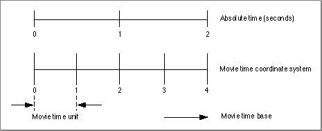

Time and the Movie Toolbox
At the most basic level, the Movie Toolbox allows you to process time-based data. As such, the Movie Toolbox must provide a description of the time basis of that data as well as a definition of the context for evaluating that time basis. In QuickTime, a movie's time basis is referred to as its time base. Geometrically, you can think of the time base as a vector that defines the direction and velocity of time for a movie. The context for a time base is called its time coordinate system. Essentially, the time coordinate system defines the axis on which the time base vector is plotted (see Figure 2-2 on page 2-8). The smallest single unit of time marked on that axis is defined by the time scale as the units per absolute second.The following sections discuss each of these key concepts further.
Time Coordinate Systems
A movie's time coordinate system provides the context for evaluating the passage of time in the movie. If you think of the time coordinate system as defining an axis for measuring time, it is only natural that this axis would be marked with a scale that defines a basic unit of measurement. In QuickTime, that measurement system is called a time scale.A QuickTime time scale defines the number of time units that pass each second in a given time coordinate system. A time coordinate system that has a time scale of 1 measures time in seconds. Similarly, a time coordinate system that has a time scale of 60 measures sixtieths of a second. In general, each time unit in a time coordinate system is equal to (1/time scale) seconds. Some common time scales are listed in Table 2-1.
Table 2-1 Common movie time scales Time scale Absolute time measured 1 Seconds 60 Sixtieths of a second (Macintosh ticks) 1000 Milliseconds 22254.54 Sound sampled at 22 kHz (kilohertz) Figure 2-1 shows a duration of two seconds in absolute time and equivalent durations in the common time scales listed in Table 2-1.
A particular point in time in a time coordinate system is represented using a time value. A time value is expressed in terms of the time scale of its time coordinate system. Without an appropriate time scale, a time value is meaningless. For example, in a time coordinate system with a time scale of 60, a time value of 180 translates to 3 seconds. Because all time coordinate systems tie back to absolute time (that is, time as we measure it in seconds), the Movie Toolbox can translate time values from one time coordinate system into another.
Time coordinate systems have a finite maximum duration that defines the maximum time value for a time coordinate system (the minimum time value is always 0). Note that as a QuickTime movie is edited, the duration changes.
As the value of the time scale increases (as the time unit for a coordinate system gets smaller in terms of absolute time), the maximum absolute time that can be represented in a time coordinate system decreases. For example, if a time value were represented as an unsigned 16-bit integer, its maximum value would be 65,535. In a time coordinate system with a time scale of 1, the maximum time value would represent 65,535 seconds. However, in a time coordinate system with a time scale of 5, the maximum time value would correspond to 13,107 seconds. Hence, a time coordinate system's duration is limited by its time scale. QuickTime uses 32-bit and 64-bit quantities to represent time values, so you only need to worry about attaining a maximum absolute time in situations where a time coordinate system's duration is very long or its time scale is very large.
Time Bases
A movie's time base defines its current time value and the rate at which time passes for the movie. The rate specifies the speed and direction in which time travels in a movie. Negative rate values cause you to move backward through a movie's data; positive values move forward. The time base also contains a reference to the clock that provides timing for the time base. QuickTime clocks are implemented as components that are managed by the Component Manager.Time bases exist independently of any specific time coordinate system. However, time values extracted from a time base are meaningless without a time scale. Therefore, whenever you obtain a time value from a time base, you must specify the time scale of the time value result. The Movie Toolbox translates the time base's time value into a value that is sensible in the specified time scale.
Figure 2-2 represents a time coordinate system and a time base geometrically. The
- Note
- A time base differs from a time coordinate system, which provides the foundation for a time base. (A time coordinate system is the field of play that defines the coordinate axis for a time base.) A time base operates in the context of a time coordinate system. It has a rate, which implies a direction as well as a speed through the movie.
time coordinate system is represented by a coordinate axis. In this example, the time coordinate system has a time scale of 2; that is, there are two time units in each second. The duration of this time coordinate system is 2 seconds, which is equivalent to 4 time units. An object's time base is depicted by the large arrow under the axis that represents the time coordinate system. This time base has a current time value of 3 and a rate of 1. The starting time is a time value, expressed in the units of the time coordinate system.Figure 2-2 A time coordinate system and a time base
